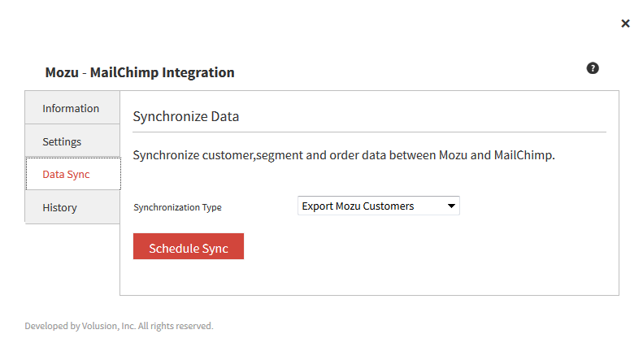
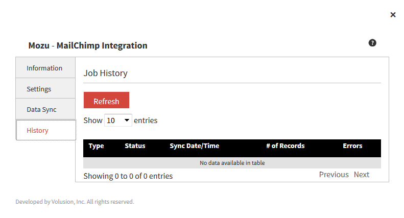

MailChimp Application by Mozu Configuration Guide
Welcome to MailChimp and Mozu
MailChimp provides online services for crafting and generating refined email campaigns to promote your business to current and potential customers and shoppers. With a few images, written content, and selections, your emails go from simple data with a few links to stylish, informative marketing pieces sent to key audiences based on subscriptions and configured settings. MailChimp helps you generate better business by marketing to your Mozu customers through campaigns, reducing costs and lost time and money spent on design.
Mozu offers an app to leverage MailChimp's services to integrate with your Mozu customer accounts, subscribed shoppers, and completed orders. Through your Mozu app, you can sync your MailChimp mailing lists with Mozu subscribers, build email campaigns in MailChimp, and generate emails using your subscribed mailing list customers in your Mozu store.
Application Features
- Complete an initial sync between your MailChimp account with Mozu to share data between the services, including contacts and completed orders.
- Data syncs automatically occur between the systems per specific events including subscription opt in/opt out, creating customer account, creating new customer segments in Mozu, adding/removing customers in segments, and completing an order. Additional syncs may be needed in case of MailChimp maintenance or server outages to verify all subscribers.
- Create and send email campaigns in MailChimp to your Mozu customers.
- Review a history of manual data syncs between Mozu and MailChimp.
The following occurs between Mozu and the MailChimp app:
- As shoppers select to join the mailing list by subscribing, Mozu updates MailChimp with the opt-in setting for that customer.
- If a shopper clicks to unsubscribe from an email, MailChimp updates Mozu with the opt-out setting.
- A customer completes an order. Mozu sends an update automatically to MailChimp.
- A customer is added or removed from a customer segment in Mozu. This data is updated for the account.
Install the App
You can install the MailChimp Application by Mozu directly from the Mozu App Marketplace:
- Go to: www.mozu.com/marketplace
- In the Search field, enter: MailChimp
- Click the app icon.
- On the app page, click Install Now.
Configuration Requirements
To configure MailChimp to work seamlessly with Mozu, you need specific items installed and settings provided. This guide details each step from requirements to final configuration for syncing contacts and generating email campaigns.
You must meet the following criteria to configure the MailChimp app:
- You must have the MailChimp Application by Mozu installed into your tenant.
- You must have an active MailChimp account with an API Key. When added, the available list and tenant names on your account display in the app.
- You must maintain all campaign designs, rules, and settings in your MailChimp account.
- You must create only one mailing list in MailChimp for use in Mozu. Mozu supports one mailing list at this time.
- You can create customer segments at any time in Mozu. This data updates into MailChimp as created, edited, and removed.
Initialize and Enable the MailChimp App
Prior to creating campaigns and sending emails, you must initialize then enable the MailChimp app.
Configure MailChimp Account Settings
To initialize the app, you add the API Key and link one site to one list. Mozu only supports one site per tenant at this time.
- On the Mozu Admin top bar, select Settings > Applications.
- Double-click MailChimp.
- Click the Configuration link to open configuration settings.
- On the Settings tab, enter your MailChimp API Key. If you need help finding your API Key, see the next section Find the MailChimp API Key. When you click outside of the field, Mozu contacts MailChimp to establish the connection. On success, a green checkmark displays. When selected, click out of the list to save the change.
- Data of available lists fills the List Name drop-down menu.
- Select a List Name to associate between Mozu and MailChimp. Mozu only supports one list per tenant at this time.
- When selected, the association automatically verifies and displays. The app page updates displaying Initialized: true.
Find the MailChimp API Key
If you are unsure where to find this key, do the following:
- Log in to your MailChimp account online.
- Open the Account page and click Extras > API keys.
- A list of keys will display on the page. If not, click Create a Key and continue those steps.
- Copy and paste the long API Key into the Mozu App.
The API Key grants access to sync contacts and send email campaigns.
Enable the MailChimp App
With the app initialized, you can enable the app:
- On the Mozu Admin top bar, select Settings > Applications.
- Double-click MailChimp.
- Click Enable App on the MailChimp page.
Configure the Application
To integrate your MailChimp services with Mozu, you need to sync the data. The applications require at least one import and export to connect and update. You can perform a manual sync of data through imports and exports. Any manual jobs add a completed log file to the History tab.
Once connected, MailChimp and Mozu share data for customer accounts and contacts. All new accounts are created in Mozu. MailChimp manages and provides updated opt in/out settings from received email requests. All data is maintained in Mozu and shared with MailChimp.
Import MailChimp Contacts
With your Mozu and MailChimp accounts newly connected, you should import your MailChimp contacts. The shared data updates the opt in/out settings for your Mozu customer accounts/contacts. Once synced, if a MailChimp contact changes their status, it automatically syncs and updates to Mozu.
- On the Mozu Admin top bar, select Settings > Applications.
- Double-click MailChimp.
- Click the Configuration link to open configuration settings.
- On the Data Sync tab, select the Synchronization Type as Import MailChimp Customers.
- Click Schedule Sync. A job begins to update subscribed and unsubscribed customers with your contact list.
- A new record adds to the History tab.
Export Mozu Customers
With your Mozu and MailChimp accounts newly connected, you should export your Mozu customers. These customer accounts add as new MailChimp contacts or update the subscription settings for current contacts. This data also includes any Mozu customer segments.
Once synced, Mozu adds any current subscribers to MailChimp contacts. Any new or removed subscribers automatically update between Mozu and MailChimp. Once synced, if a Mozu customer changes their opt-in status, customer data changes in Mozu, or the customer segment(s) change in Mozu, it automatically syncs and updates to MailChimp.
- On the Mozu Admin top bar, select Settings > Applications.
- Double-click MailChimp.
- Click the Configuration link to open configuration settings.
- On the Data Sync tab, select the Synchronization Type as Export Mozu Customers.
- Click Schedule Sync. A job begins to update subscribed and unsubscribed customers with your contact list. 
- A new record adds to the History tab. 
Export Mozu Orders
With your Mozu and MailChimp accounts newly connected, you should export your Mozu orders. Only the completed orders are exported into Mozu.
- On the Mozu Admin top bar, select Settings > Applications.
- Double-click MailChimp.
- Click the Configuration link to open configuration settings.
- On the Data Sync tab, select the Synchronization Type as Export Mozu Orders.
- Click Schedule Sync. A job begins to export all completed order data associated with customers to MailChimp.
- A new record adds to the History tab.